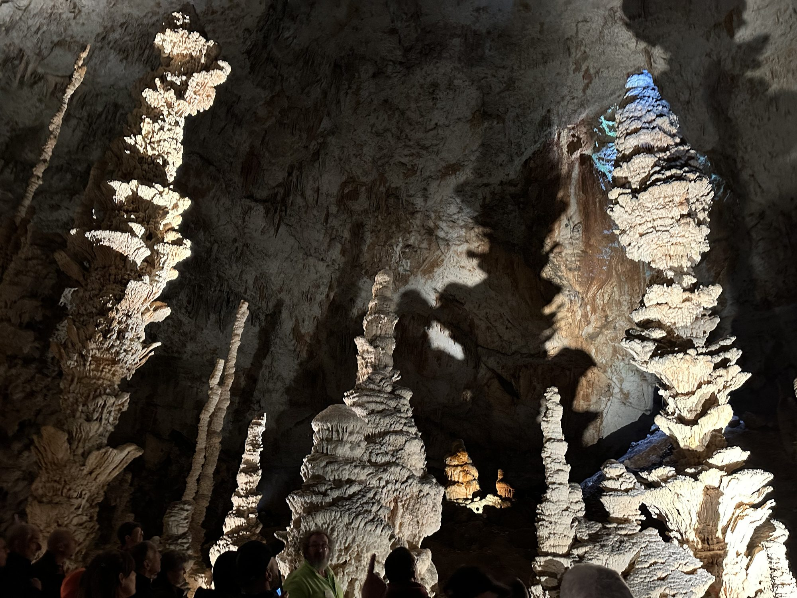

Discovered nearly 90 years ago not far from the Gorges de l'Ardèche, the Aven d'Orgnac is a true underground geological gem, complemented above ground by a leading museum, the Cité de la Préhistoire. It is today the only cave in France awarded Grand Site de France status, about 1h15 from Les Cabritas.

An underground gem of impressive scale
The guided tour leads through three immense galleries, with ceilings reaching up to 55 metres high in places. In a constant 12°C atmosphere all year round, the silence and plays of light on the rock formations create a striking experience, where time seems to stand still. The guided visit lasts about an hour, with 700 steps to descend, though a lift takes you back up to the surface effortlessly.
The Cité de la Préhistoire
Above ground, the Museum of Prehistory brings the dawn of humanity to life through digital simulations and demonstrations (fire-lighting, flint-knapping, spear-throwing), offering fresh insight into the archaeological digs carried out in Ardèche and northern Gard. Access to the Cité de la Préhistoire is free, while visiting the cave requires booking.
Good to know before you visit
Expect to pay around €16.50 per adult and €11 per child (ages 6-17, free under 6) for the combined cave + Cité de la Préhistoire pass. As the cave is very close to the Gorges de l'Ardèche and the Grotte Chauvet 2, it's easy to combine both visits in the same day. Since the temperature stays constant year-round, bring a light jumper even in high summer.
Practical info from Les Cabritas
- Distance from Flaviac: about 1h15 by car
- Best time to go: all year round, ideal on hot days
- Great for: families, geology enthusiasts, all-weather outings
Fancy discovering the Aven d'Orgnac from your cottage in Ardèche?
Les Cabritas welcomes you in Flaviac, at the heart of Ardèche, for a comfortable stay with a private pool, just a stone's throw from the region's most beautiful sites.
Check availability